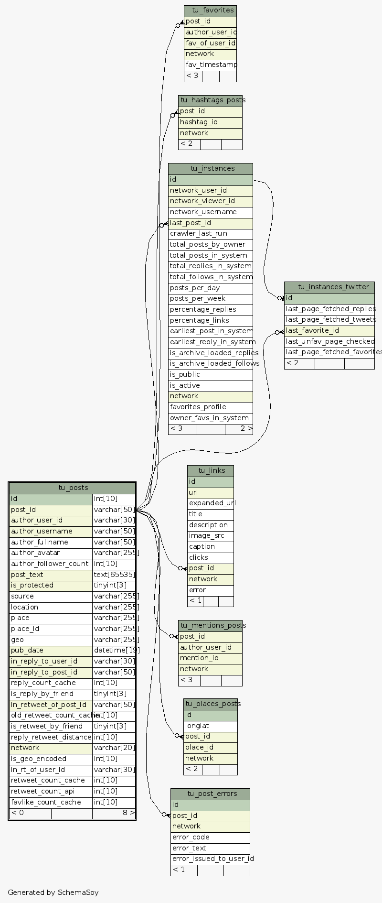

| Table thinkup.tu_posts Posts by service users on a given network.
|
Generated by SchemaSpy |
| ||||||||||||||||||||||||||||||||||||||||||||||||||||||||||||||||||||||||||||||||||||||||||||||||||||||||||||||||||||||||||||||||||||||||||||||||||||||||||||||||||||||||||||||||||||||||||||||||||||||||||||||||||||||||||||||||||||||||||||||||||||||||||||||||||||||||||||||||||||||||||||||
Analyzed at Mon Oct 03 12:21 PDT 2011 | ||||||||||||||||||||||||||||||||||||||||||||||||||||||||||||||||||||||||||||||||||||||||||||||||||||||||||||||||||||||||||||||||||||||||||||||||||||||||||||||||||||||||||||||||||||||||||||||||||||||||||||||||||||||||||||||||||||||||||||||||||||||||||||||||||||||||||||||||||||||||||||||
Indexes:
| Column(s) | Type | Sort | Constraint Name |
|---|---|---|---|
| id | Primary key | Asc | PRIMARY |
| author_user_id | Performance | Asc | author_user_id |
| author_username | Performance | Asc | author_username |
| in_reply_to_post_id | Performance | Asc | in_reply_to_post_id |
| in_reply_to_user_id | Performance | Asc | in_reply_to_user_id |
| in_retweet_of_post_id | Performance | Asc | in_retweet_of_status_id |
| is_protected | Performance | Asc | is_protected |
| network | Performance | Asc | network |
| post_text | Performance | Asc | post_fulltext |
| post_id | Performance | Asc | post_id |
| post_id + network | Must be unique | Asc/Asc | post_network |
| pub_date | Performance | Asc | pub_date |
|
 
|